第 17 章积分
此前我们已经揭示了一个伟大的秘密，那就是这个神秘的符号 \(\int\)，实际上只是一个拉长了的 \(S\)，仅仅意味着“总和”或者“所有此类量的总和”。因此，它类似于另一个符号 \(\sum\) (希腊字母 Sigma)，也是一个求和的标志。然而，在数学家的实践中，这些符号的使用有一些不同之处：\(\sum\) 通常用来表示有限多个量的总和，而积分符号 $ \int$ 则通常用来表示对无数个无限小的微小量的总和，这些微量共同组成了所需的总量。例如，\(\int dy = y\)，\(\int dx = x\)。
任何人都能理解，整体都可以被想象为由许多小部分组成；而这些部分越小，它们的数量就会越多。例如，一条一厘米长的线可以被想象成由 \(10\) 段组成，每段 \(\frac{1}{10}\) 厘米长；或者由 \(100\) 段组成，每段 \(\frac{1}{100}\) 厘米长；或者由 \(1,000,000\) 段组成，每段 \(\frac{1}{1,000,000}\) 厘米长；再或者，将这一思想推至极限，它可以被视为由无数个无限小的部分组成。
你可能会说，这种方式有什么意义呢？为什么不直接将整体看作整体？答案很简单：在许多情况下，我们无法直接计算出整体的大小，必须通过加总许多小部分来实现。“积分”的过程正是为了让我们能够计算出那些无法直接估计的总量。
我们先从一两个简单的例子入手，以熟悉这一加总许多部分的概念。
考虑以下级数：
在这个级数中，每一项的值都是前一项的一半。如果我们可以无限延续下去，这个总和的值是多少？每个学生都知道答案是 \(2\)。可以这样想：将其看作一条线。开始时是一厘米；加上半厘米，再加上四分之一厘米，再加上八分之一厘米，依此类推。如果在某个步骤停止，还会有一部分尚未加上以组成完整的 \(2\) 厘米；而这未加上的部分总是与最后一次加上的部分一样大。例如，如果在加上 \(1\)、\(\frac{1}{2}\) 和 \(\frac{1}{4}\) 后停止，还会有 \(\frac{1}{4}\) 未加上。如果我们继续到加上 \(\frac{1}{64}\)，仍然会有 \(\frac{1}{64}\) 未加上。这个剩余部分总是等于最后一项的大小。只有通过无穷次操作，才能真正达到 \(2\) 厘米的总和。实际上，当我们加到那些小到无法画出的部分时就可以认为达到了总和——这大约需要10项，因为第11项是 \(\frac{1}{1024}\)。如果我们想要小到连最精密的测量仪都无法检测，那只需大约20项即可。即便是显微镜，也无法显示出第18项！因此，无穷次操作实际上并没有那么可怕。积分就是这样一个完整的总和。然而，正如我们将看到的，在某些情况下，积分运算能让我们精确计算出通过无穷次操作得到的总量。在这些情况下，积分运算提供了一种快速且简便的方法，来得到一个原本需要无穷复杂步骤才能得出的结果。所以我们最好立刻开始学习“如何积分”。
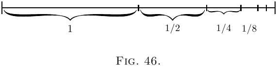
曲线的斜率与曲线本身
我们先做一些关于曲线斜率的初步探讨。我们已经知道，求曲线的导数意味着找到其斜率（或在不同点上的斜率）的表达式。那么，如果定了斜率（或斜率的表达式），是否可以进行反向操作，从而重建整个曲线呢？
我们考虑最简单的曲线——一条斜直线，其方程为：
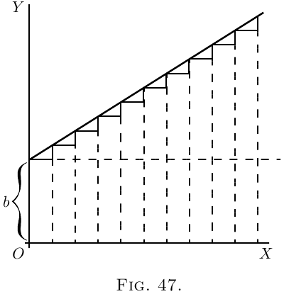
在这里，\(b\) 表示当 \(x=0\) 时 \(y\) 的初始高度，而 \(a\)（即 \(\dfrac{dy}{dx}\)）表示这条直线的“斜率”。这条直线的斜率是恒定的。在直线的每一部分上，基本的三角形
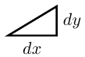
的高与底始终保持相同比例。假设我们将 \(dx\) 和 \(dy\) 取为有限量，例如 \(10\) 个 \(dx\) 构成一厘米，那么会有 \(10\) 个小三角形，如下所示：
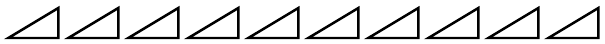
现在，假设我们要从 \(\dfrac{dy}{dx} = a\) 这个信息开始，重建这条“曲线”。该怎么做呢？依然取这些小 \(d\) 为有限大小，我们可以画出 \(10\) 个这样的 \(d\)，所有的斜率都相同，然后将它们首尾相连，如下图所示：
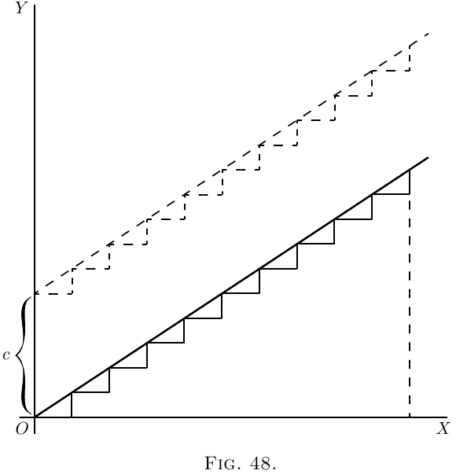
由于斜率对于所有部分都是相同的，这些小 \(d\) 将连接成一条如图 48所示的斜直线，其斜率为 \(\dfrac{dy}{dx} = a\)。只要我们认同 \(y\) 是所有 \(dy\) 的总和，\(x\) 是所有 \(dx\) 的总和，无论取 \(dy\) 和 \(dx\) 为有限还是无限小(它们始终相同)，显然有 \(\dfrac{y}{x} = a\)，然而，我们应该把这条斜线放在哪里？是从原点 \(O\) 开始，还是从更高处开始？由于只有关于斜率的信息，因此无法确定其具体的初始高度。无论初始高度如何，斜率始终相同。因此，我们可以假设一个合理的高度，从 \(O\) 点上方 \(C\) 的位置开始。这时，我们得到的方程是：
在这种情况下，添加的常数显然表示当 \(x=0\) 时 \(y\) 的具体值。
接下来，我们看一个更复杂的例子，即一条斜率不是恒定的曲线，而是斜率逐渐增加的曲线。假设上升的斜率随着 \(x\) 的增长而逐渐变大。用符号表示为：
具体情况下，取 \(a = \frac{1}{5}\)，因此：
我们最好先计算一些不同 \(x\) 值下的斜率值，并画出它们的小图。
| \(x =0\) | $ \frac{dy}{dx} = 0, $ | 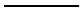 |
|---|---|---|
| \(x =1\) | $ \frac{dy}{dx} = 0.2, $ | |
| \(x =2\) | $ \frac{dy}{dx} = 0.4, $ | 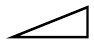 |
| \(x =3\) | $ \frac{dy}{dx} = 0.6, $ | 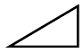 |
| \(x =4\) | $ \frac{dy}{dx} = 0.8, $ | 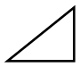 |
| \(x =5\) | $ \frac{dy}{dx} = 1.0. $ | 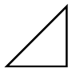 |
接着尝试将这些小片段拼接起来，使每个片段的底部中点位于正确的水平位置，并在角点处彼此吻合，如图49。结果当然不会是一条平滑的曲线，而是一个对曲线的近似。如果我们将片段减小为原来的一半，但数量加倍，如图50，会得到一个更好的近似。然而，要得到一条完美的曲线，我们应该将每个 \(dx\) 和其对应的 \(dy\) 取得无限小且数量无限多。
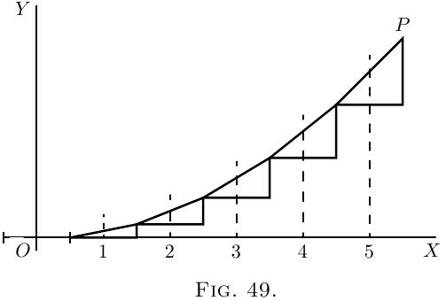
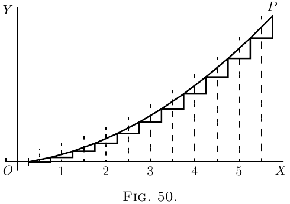
那么，在任何点 \(P\) 上，\(y\) 的值应该是多少呢？显然，在曲线上的任意点 \(P\)，\(y\) 的值是从 \(0\) 到该点的所有小 \(dy\) 的总和，即 \(\int dy = y\)。由于每个 \(dy\) 都等于 \(\frac{1}{5}x · dx\)，因此整个 \(y\) 就是所有 \(\frac{1}{5}x · dx\) 的总和，用积分表示为 \(\int \tfrac{1}{5}x · dx\)。
如果 \(x\) 是一个常数，那么 \(\int \tfrac{1}{5}x · dx\) 等于 \(\frac{1}{5} x \int dx\)，即 \(\frac{1}{5}x^2\)。但 \(x\) 是从 \(0\) 开始，增长到点 \(P\) 的特定值，因此它从 \(0\) 到该点的平均值是 \(\frac{1}{2}x\)。因此，\(\int \tfrac{1}{5} x\, dx = \tfrac{1}{10} x^2\)，或 \(y=\frac{1}{10}x^2\)。
但与之前的情况一样，这需要添加一个未定常数 \(C\)，因为我们不知道曲线在 \(x=0\) 时从原点上方的哪个高度开始。因此，画在图51中的曲线方程为：
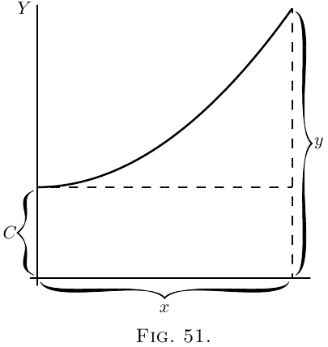